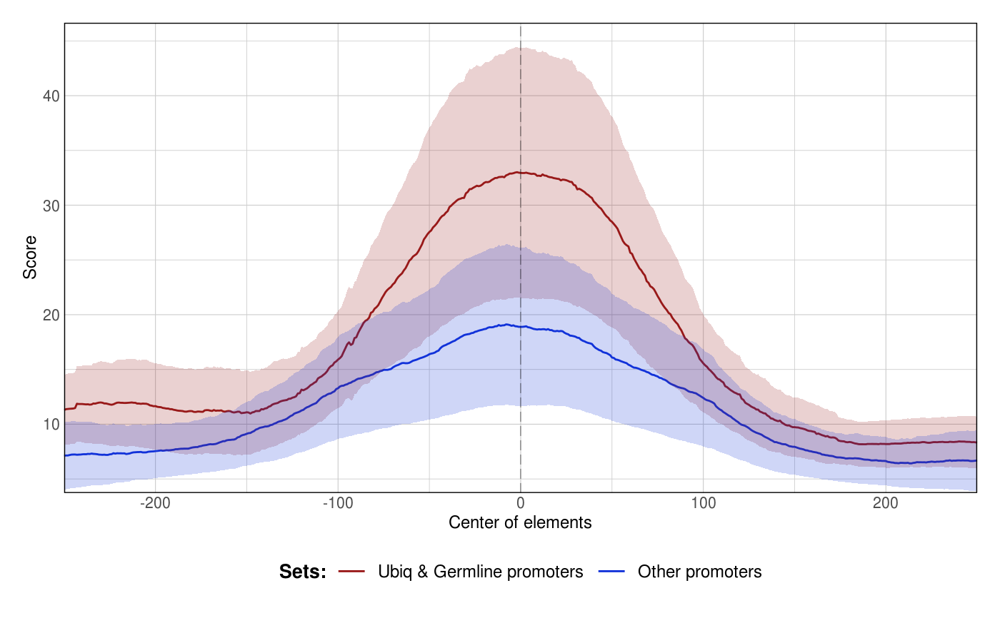

A function to plot aggregated signals over sets of GRanges
Source:R/GRanges.R
plotAggregateCoverage.SimpleRleList.RdThis function takes one or several RleList genomic tracks (imported by rtraklayer::import(..., as = 'Rle')) and one or several GRanges objects. It computes coverage of the GRanges by the genomic tracks and returns an aggregate coverage plot.
# S3 method for SimpleRleList plotAggregateCoverage( x, granges, colors = NULL, xlab = "Center of elements", ylab = "Score", xlim = NULL, ylim = NULL, quartiles = c(0.025, 0.975), verbose = FALSE, bin = 1, plot_central = TRUE, run_in_parallel = FALSE, split_by_granges = FALSE, norm = "none", ... )
Arguments
| x | a single signal track (SimpleRleList class) |
|---|---|
| granges | a GRanges object or a list of GRanges |
| colors | a vector of colors |
| xlab | x axis label |
| ylab | y axis label |
| xlim | y axis limits |
| ylim | y axis limits |
| quartiles | Which quantiles to use to determine y scale automatically? |
| verbose | Boolean |
| bin | Integer Width of the window to use to smooth values by zoo::rollMean |
| plot_central | Boolean Draw a vertical line at 0 |
| run_in_parallel | Boolean Should the plots be computed in parallel using mclapply? |
| split_by_granges | Boolean Facet plots over the sets of GRanges |
| norm | character Should the signal be normalized ('none', 'zscore' or 'log2')? |
| ... | additional parameters |
Value
A plot of aggregated signals
Examples
#> [1] "SimpleRleList" #> attr(,"package") #> [1] "IRanges"p1 <- plotAggregateCoverage( ce11_ATACseq, resize(ce11_proms[1:100], fix = 'center', width = 1000) ) p1proms <- resize(ce11_proms[1:100], fix = 'center', width = 500) p2 <- plotAggregateCoverage( ce11_ATACseq, list( 'Ubiq & Germline promoters' = proms[proms$which.tissues %in% c('Ubiq.', 'Germline')], 'Other promoters' = proms[!(proms$which.tissues %in% c('Ubiq.', 'Germline'))] ) ) p2